速览
樱井从 2006 年起 10 年间，主办过每年一次的游戏音乐音乐会「PRESS START」：由多款游戏的乐曲组成的合集形式，以东京公演为主，也在横滨、大阪、名古屋，以及海外的上海、巴黎等地举办。其他主办者有指挥竹本泰藏、《最终幻想》作曲家植松伸夫、卡比系列等的作曲家酒井省吾、FF7 等剧本作家野岛一成。契机是 2002 年 FF 与《大乱斗 DX》的管弦乐音乐会分别举办，两场都由竹本指挥；因这层缘分五人同桌，聊到要办一场让游戏音乐广为人知的管弦乐音乐会——一般酒桌上的话就到此为止，但借助音乐制作公司 Companys 和赞助商 enterbrain 的力量，真的实现了。PRESS START 前身虽不是它，但过去杉山浩一老师曾举办「游戏音乐音乐会」，同样是合集形式、有厂商赞助；樱井去听过，现场听到《超级大金刚》时，真觉得巨大的大金刚要冲出来了——人当场演奏出的音层有说不出的力量；当时还在第一首演奏了《超级豪华版》，他很感谢。那是游戏音乐管弦乐会还难被理解的时代，杉山老师的 DQ 成了交响曲，但很多作品未必适合管弦乐编曲——对这种提升游戏音乐地位的活动他只有尊敬。PRESS START 的制作从选曲开始：成员中最懂游戏的老实说只有他，于是他收集各作音源在会议上让大家听、再筛选；定下后由各编曲家编成管弦乐谱，经排练到正式演出。也准备过游戏影像，但画面太闹会让人无法专注演奏，所以不过度放原作影像。每次几乎满座，取得了相应成果，但持续很难：每场 14～16 个曲目，算上组曲约 60 首，在本职项目进入关键期时还要调查更多作品（含落选的），实在勉强；版权上也出不了 CD，能同时享受的人数有限。但从企划起就定下坚持 10 年的目标并完成了，这很了不起。之后至少在日本游戏音乐会增多，可以说完成了使命。新冠让现场演出陷入困境；虽然因人而异，但现场演奏能带来无可替代的感动——疫情缓解、音乐会增多时，推荐去现场看看。后半段收录了《塞尔达传说》（古代祐三版）与《异度神剑》组曲的演出影像。
1. PRESS START 是什么 0:13
2006 年起 10 年间，樱井主办过每年一次的游戏音乐音乐会「PRESS START」：多款游戏乐曲组成的合集形式。
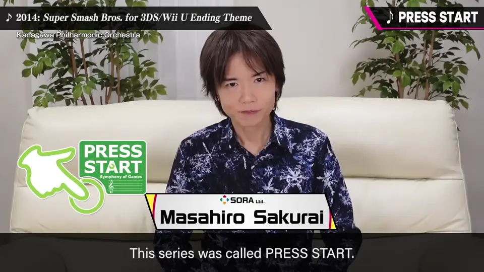
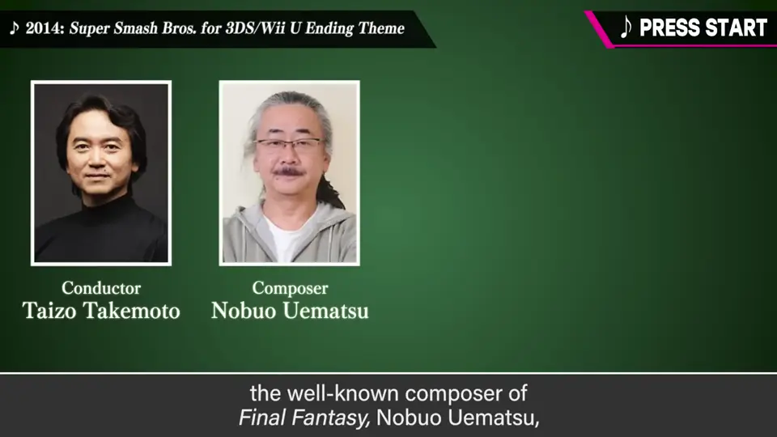
以东京公演为主，也在横滨、大阪、名古屋，以及上海、巴黎等地举办过。
| 主办者 | 身份 |
|---|---|
| 竹本泰藏 | 指挥 |
| 植松伸夫 | 《最终幻想》作曲家 |
| 酒井省吾 | 卡比系列等作曲家 |
| 野岛一成 | FF7 等剧本作家 |
| 樱井政博 | 游戏导演 |
2. 缘起：酒桌上的话成真了 0:54
2002 年，FF 与《大乱斗 DX》的管弦乐音乐会分别举办，两场都由竹本泰藏指挥。因这层缘分五人同桌，聊到要办一场让游戏音乐广为人知的管弦乐音乐会。
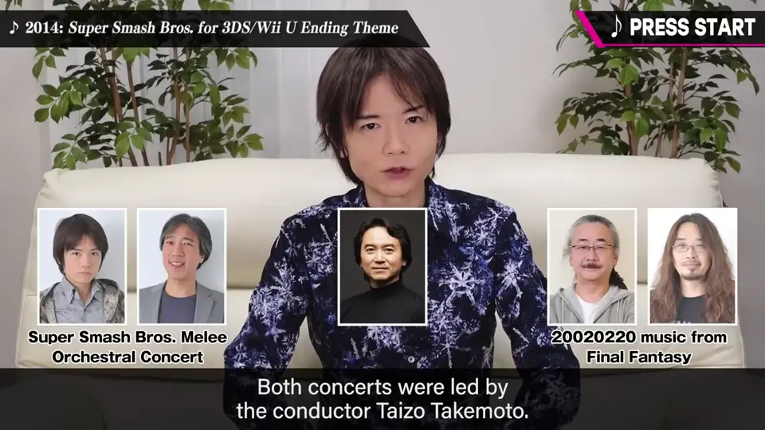
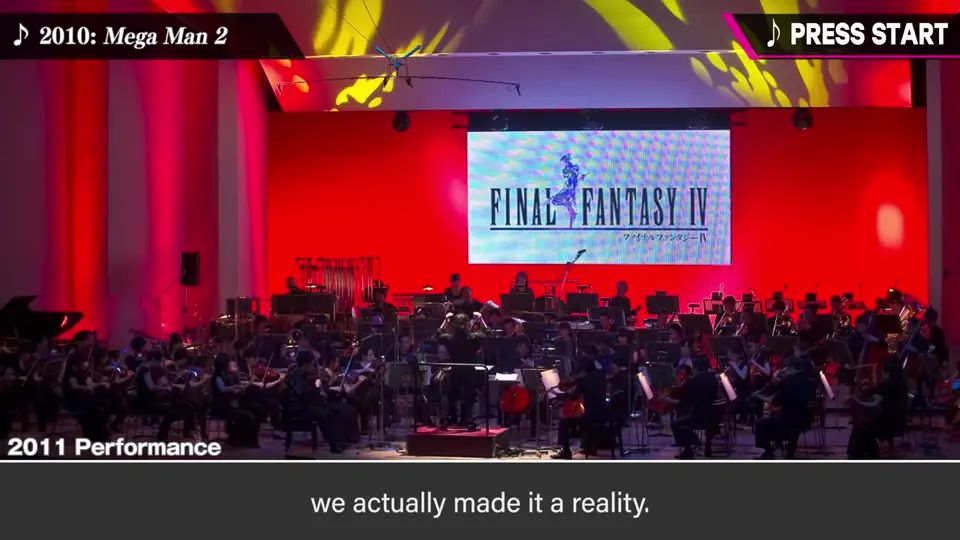
3. 致敬杉山浩一 1:33
过去杉山浩一老师曾举办「游戏音乐音乐会」，同样是合集形式、有厂商赞助。樱井去听过：现场听到《超级大金刚》时，真觉得巨大的大金刚要冲出来了。
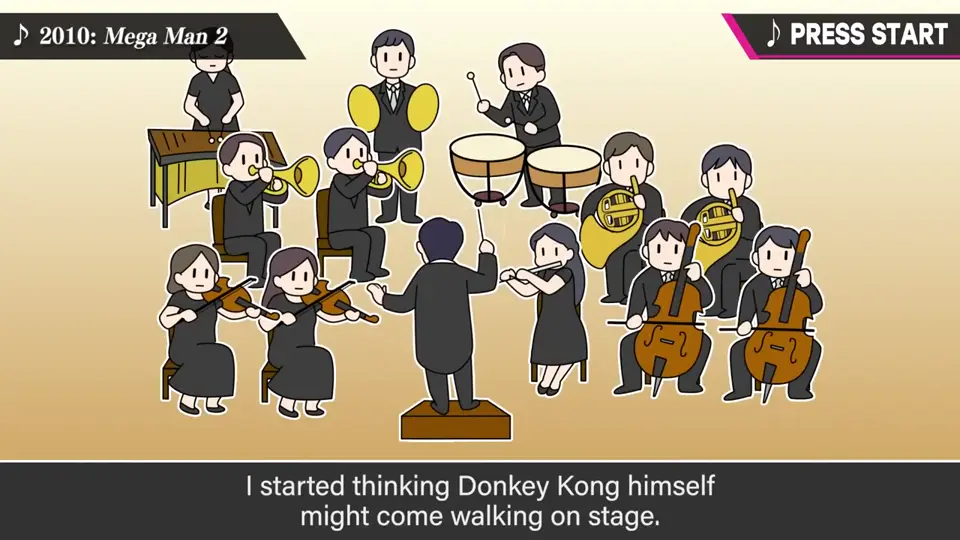
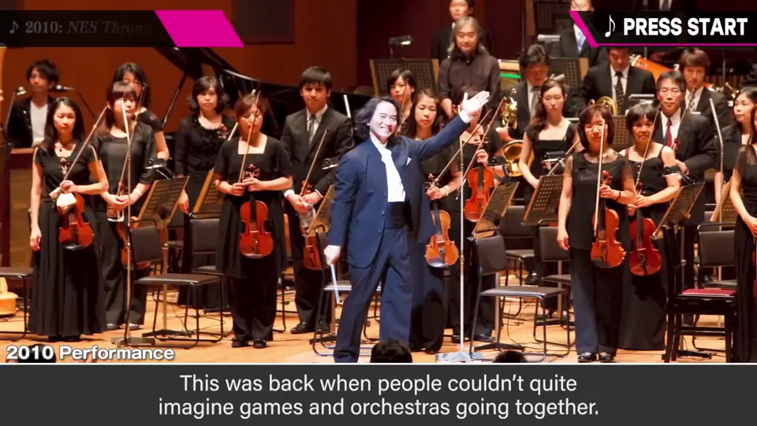
那是游戏音乐管弦乐会难以被理解的时代。很多作品未必适合管弦乐编曲，对提升游戏音乐地位的活动，他只有尊敬。
4. 制作流程 2:40
制作从选曲开始：成员中最懂游戏的老实说只有他，于是他收集各作音源，在会议上让大家听后筛选。
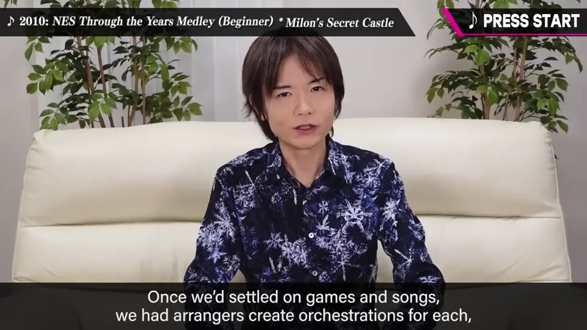
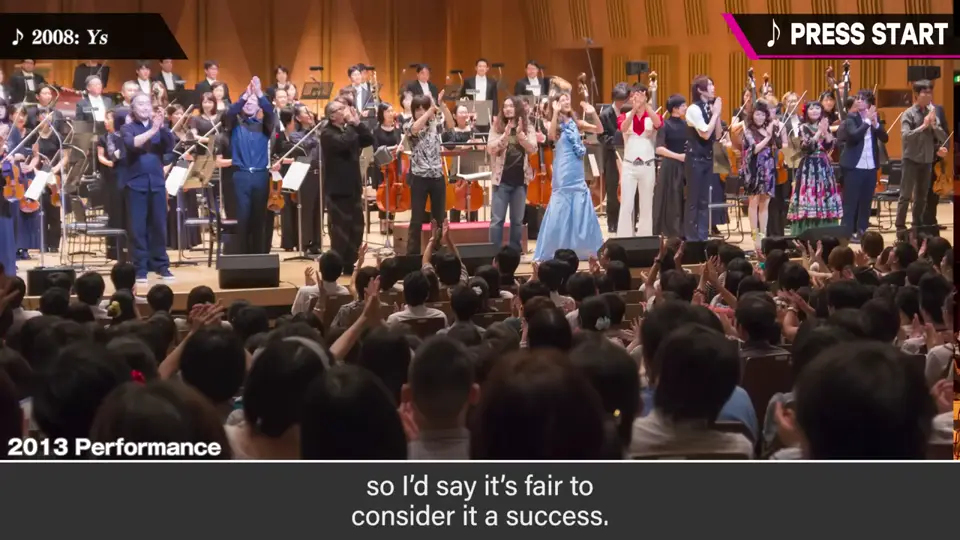
- 确定作品与曲目 → 各编曲家编成管弦乐谱 → 排练 → 正式演出。
- 也准备过游戏影像，但画面太闹会让人无法专注演奏，所以不过度放原作影像。
5. 持续之难与十年目标 3:20
每次几乎满座，取得了相应的成果，但持续很难：
- 每场 14～16 个曲目，算上组曲约 60 首；本职项目进入关键期时还要调查更多作品（含落选），实在勉强。
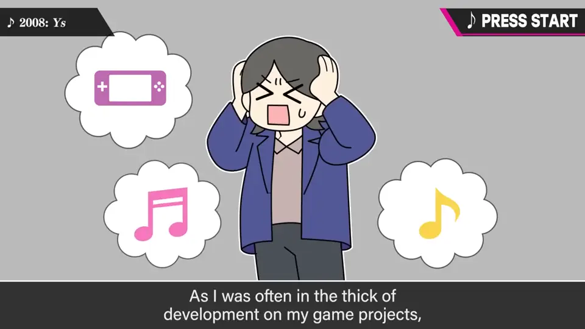
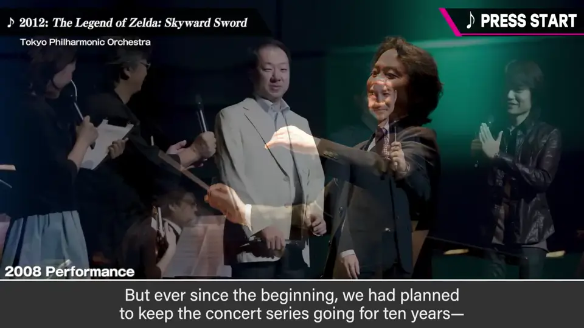
- 版权上出不了 CD，能同时享受的人数有限。
之后至少在日本，游戏音乐会增多，可以说完成了使命。
6. 去听现场吧 4:30
新冠让现场演出陷入困境。虽因人而异，但现场演奏能带来无可替代的感动——疫情缓解后，推荐去现场看看。
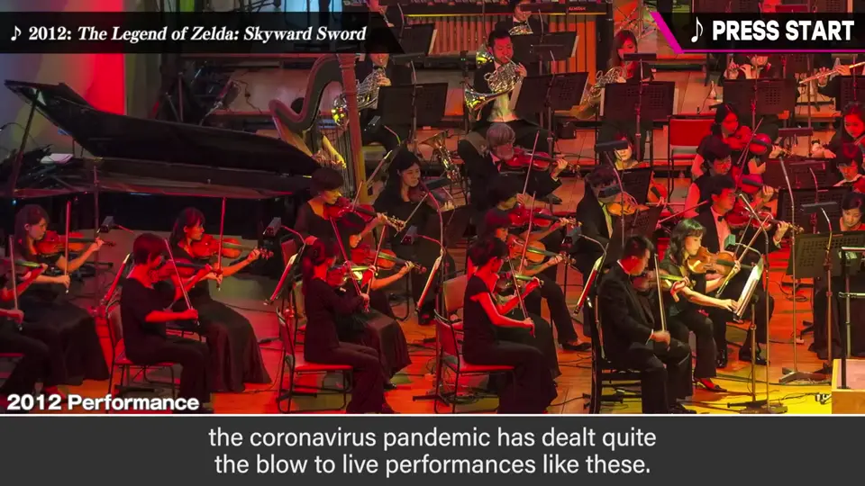
7. 演出影像 5:22
后半段收录 PRESS START 的演出影像：
- 《塞尔达传说》（古代祐三版）。
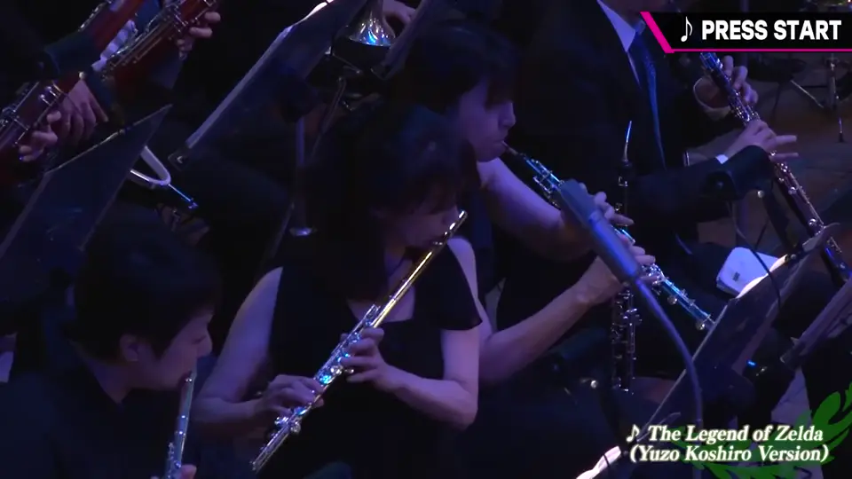
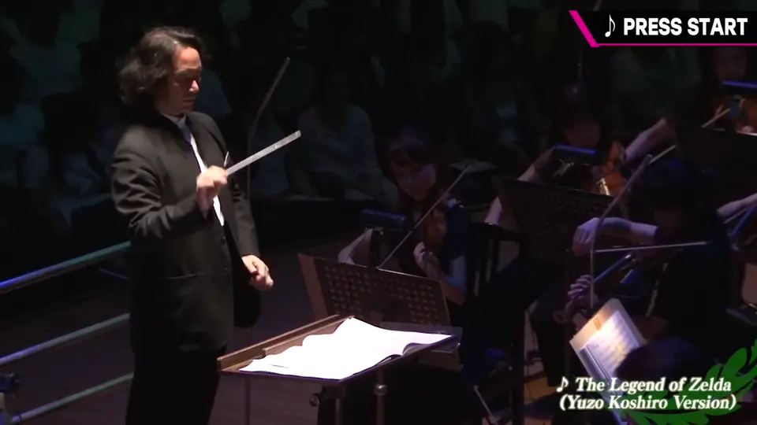
- 《异度神剑》组曲：机神界、机械律动、日暮的沼泽地、Engage the Enemy 等。
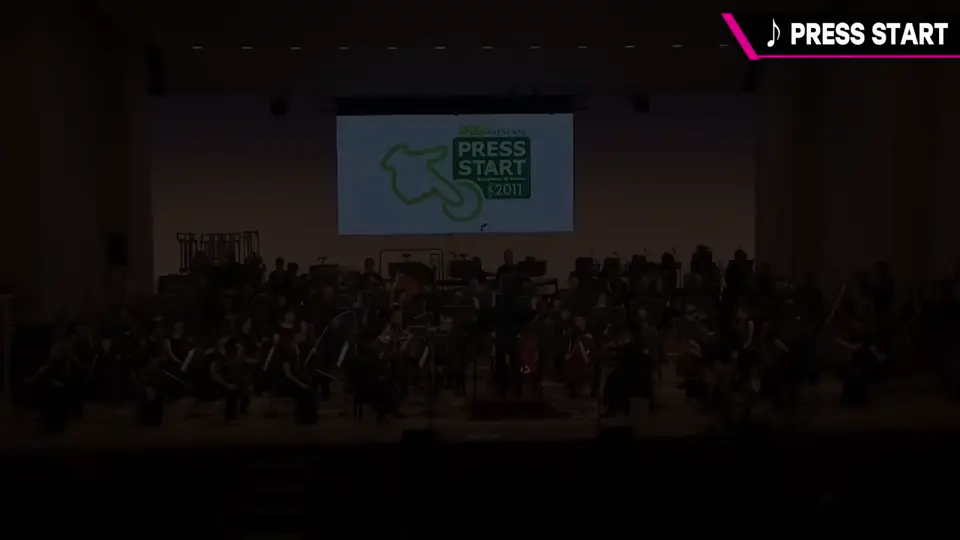
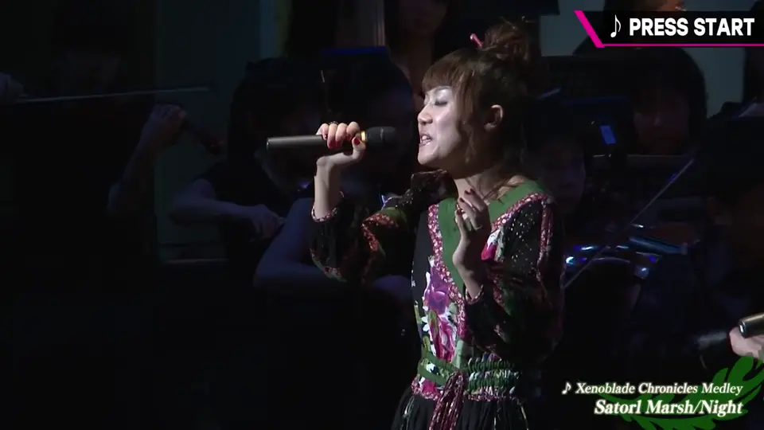
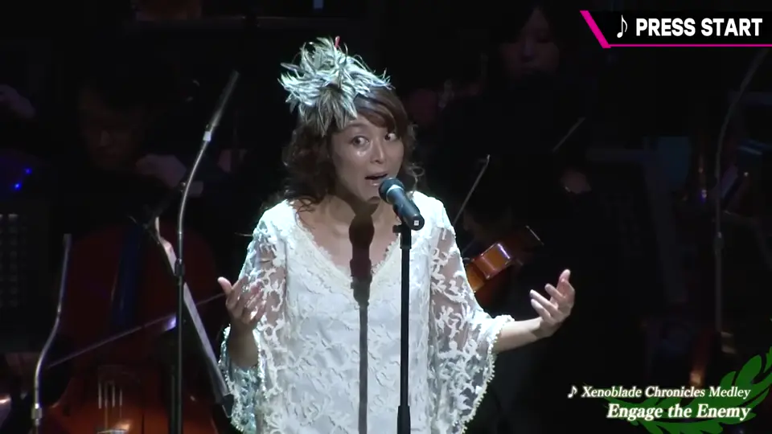
自测题
1. PRESS START 是怎样成立的？
2002 年 FF 与《大乱斗 DX》音乐会都由竹本泰藏指挥，五人酒桌上聊起，借 Companys 与 enterbrain 之力实现。 1:09
2. 为什么演出时不过度放原作影像？
画面太闹会让观众无法专注于演奏本身。 3:10
3. PRESS START 持续困难的原因有哪些？
每场约 60 首要调查编排，与本职开发冲突；版权上出不了 CD。 3:45